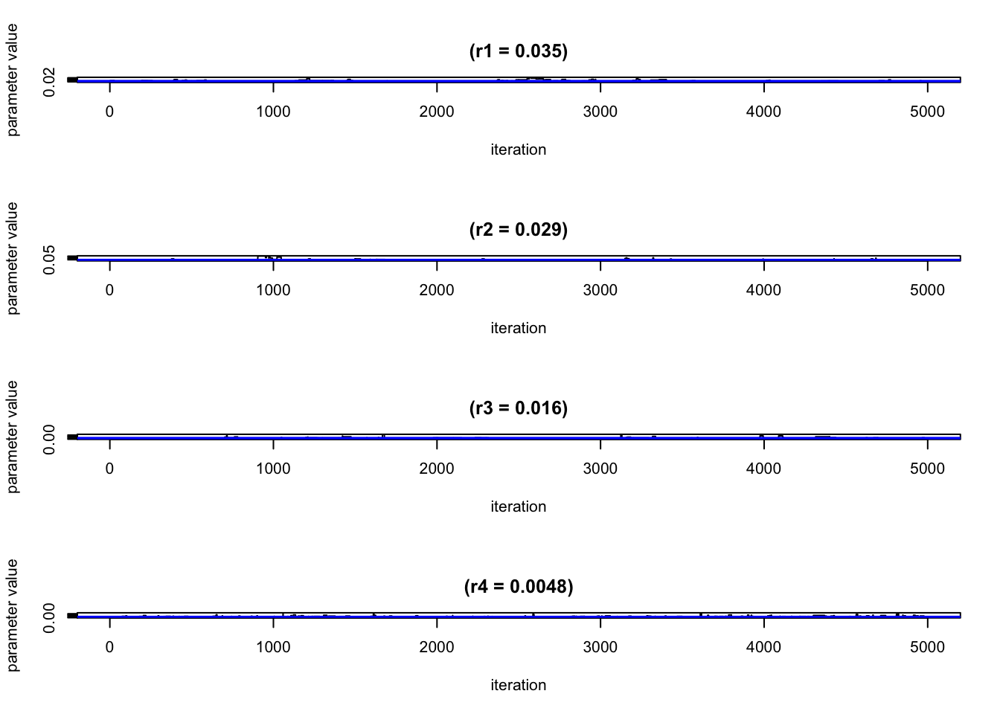
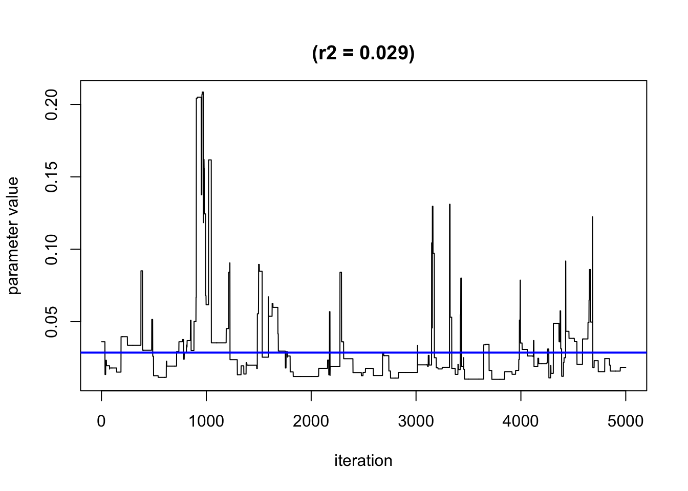
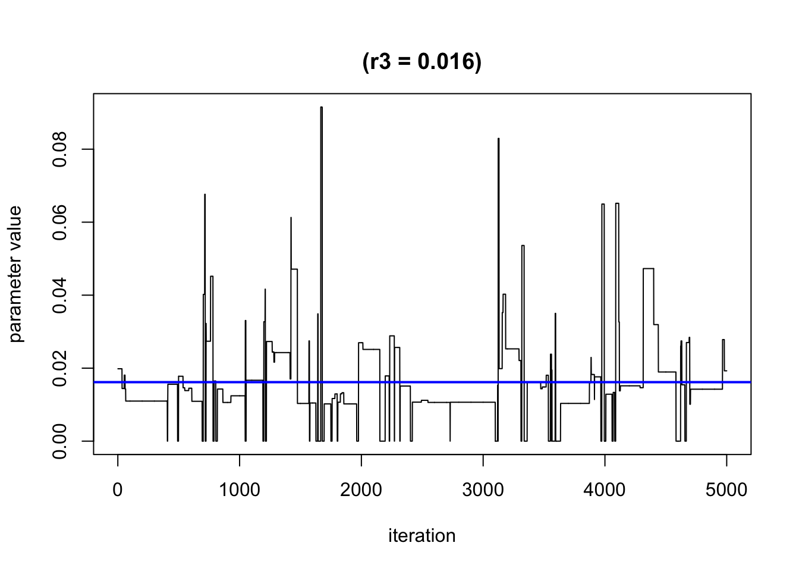
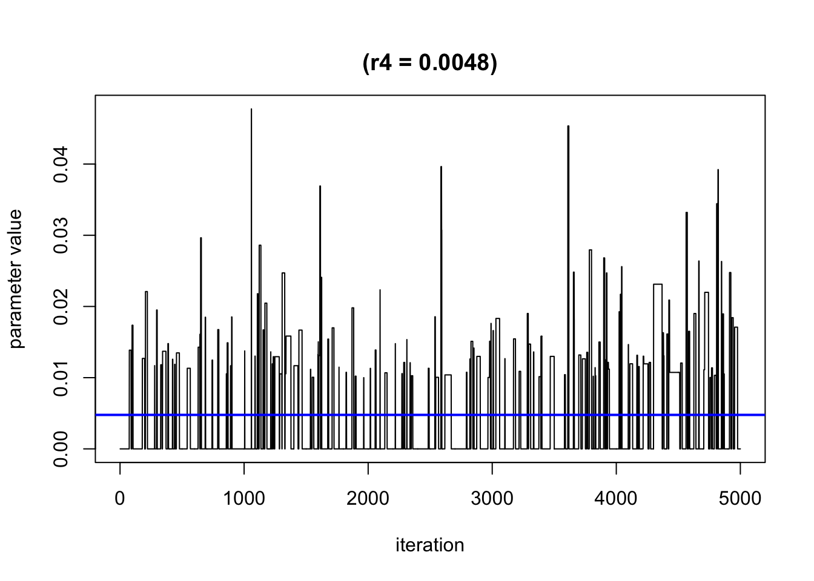

chemical_mixture
yuqimiao
2021-01-08
Last updated: 2021-01-13
Checks: 7 0
Knit directory: multiomics-SIMLR/
This reproducible R Markdown analysis was created with workflowr (version 1.6.2). The Checks tab describes the reproducibility checks that were applied when the results were created. The Past versions tab lists the development history.
Great! Since the R Markdown file has been committed to the Git repository, you know the exact version of the code that produced these results.
Great job! The global environment was empty. Objects defined in the global environment can affect the analysis in your R Markdown file in unknown ways. For reproduciblity it’s best to always run the code in an empty environment.
The command set.seed(20200830) was run prior to running the code in the R Markdown file. Setting a seed ensures that any results that rely on randomness, e.g. subsampling or permutations, are reproducible.
Great job! Recording the operating system, R version, and package versions is critical for reproducibility.
Nice! There were no cached chunks for this analysis, so you can be confident that you successfully produced the results during this run.
Great job! Using relative paths to the files within your workflowr project makes it easier to run your code on other machines.
Great! You are using Git for version control. Tracking code development and connecting the code version to the results is critical for reproducibility.
The results in this page were generated with repository version d154e64. See the Past versions tab to see a history of the changes made to the R Markdown and HTML files.
Note that you need to be careful to ensure that all relevant files for the analysis have been committed to Git prior to generating the results (you can use wflow_publish or wflow_git_commit). workflowr only checks the R Markdown file, but you know if there are other scripts or data files that it depends on. Below is the status of the Git repository when the results were generated:
Ignored files:
Ignored: .DS_Store
Ignored: .Rhistory
Ignored: .Rproj.user/
Ignored: analysis/.DS_Store
Ignored: analysis/.Rhistory
Ignored: code/.DS_Store
Ignored: code/R/.DS_Store
Ignored: code/functions/.DS_Store
Ignored: code/functions/.Rhistory
Ignored: data/.DS_Store
Untracked files:
Untracked: SIMLR-tracking.md
Untracked: analysis/GL_simlr_micro.rmd
Untracked: analysis/derivation_of_weights.jpeg
Untracked: analysis/indi_spec_weight.rmd
Untracked: code/MKerW-A/
Untracked: code/bck_scripts/
Untracked: code/cluster_functions/
Untracked: code/functions/Changing_rho.R
Untracked: code/functions/Code_5term_opt-copy.R
Untracked: code/functions/Code_5term_opt.R
Untracked: code/functions/SIMLR_no_weights.R
Untracked: code/functions/dist_kernels.R
Untracked: code/functions/gl_simlr.R
Untracked: code/functions/gl_simlr2.0.R
Untracked: code/functions/kernel_validation.R
Untracked: code/functions/microb_compare.R
Untracked: code/functions/simulation_function1.0.R
Untracked: code/functions/simulation_tidy.R
Untracked: code/functions/tmp.R
Untracked: code/ind_weight_simulation.R
Untracked: code/microb_apply/
Untracked: code/simulation_0106.R
Untracked: code/simulation_1224.R
Untracked: code/simulation_1229.R
Untracked: code/simulation_compare2.R
Untracked: code/simulation_compare3.R
Untracked: code/simulation_compare_size.R
Untracked: data/balance_24_table.Rdata
Untracked: data/configuration_data_40.Rdata
Untracked: data/eff37_24_table.Rdata
Untracked: data/example_data/
Untracked: data/ind_weight_simulation/
Untracked: data/micro_case_pool.Rdata
Untracked: data/micro_case_pool_2.Rdata
Untracked: data/simu_0106/
Untracked: data/simu_1215/
Untracked: data/simu_1220/
Untracked: data/simu_1229/
Untracked: data/simu_all/
Untracked: data/simulation_2data/
Untracked: data/simulation_data_var10_s4/
Untracked: data/simulation_data_var20_s4/
Untracked: data/simulation_gl/
Untracked: data/simulation_gl_1/
Untracked: data/simulation_microgl/
Untracked: data/simulation_microgl_1/
Untracked: data/simulation_normalization/
Untracked: data/simulation_rho/
Untracked: data/simulation_var10_50/
Untracked: data/simulation_var5_50/
Untracked: data/table_balance_3d3g.Rdata
Untracked: gl-simlr_old_analysis.Rmd
Untracked: individual_spec_weight.html
Untracked: kernelmap/
Untracked: micro_abd.Rdata
Untracked: micro_abd_preabs.Rdata
Untracked: micro_case_pool2.Rdata
Untracked: microb_multisim.Rdata
Untracked: new_micro.jpeg
Untracked: parameter_separation/
Untracked: sub111_eff55_u20.rds
Untracked: tsne/
Unstaged changes:
Modified: analysis/GL_SIMLR.rmd
Deleted: analysis/sim_report.rmd
Modified: analysis/trivial_analysis.rmd
Modified: code/R/utils.simlr.R
Deleted: code/functions/SNF_init_generater.R
Deleted: code/functions/kernel_buiding_functions.R
Deleted: code/functions/multiple.kernel.verify.R
Modified: code/functions/simulation_function.R
Modified: code/functions/simulation_verify.R
Note that any generated files, e.g. HTML, png, CSS, etc., are not included in this status report because it is ok for generated content to have uncommitted changes.
These are the previous versions of the repository in which changes were made to the R Markdown (analysis/chemical_mixture.rmd) and HTML (docs/chemical_mixture.html) files. If you’ve configured a remote Git repository (see ?wflow_git_remote), click on the hyperlinks in the table below to view the files as they were in that past version.
| File | Version | Author | Date | Message |
|---|---|---|---|---|
| Rmd | d154e64 | yuqimiao | 2021-01-13 | change plot |
| html | 6bc2dea | yuqimiao | 2021-01-08 | Build site. |
| Rmd | 89589b6 | yuqimiao | 2021-01-08 | methods implementation: BKMR and WQS |
This web is to explore a new analysis methods for the association between chemical mixture and health outcome
library(bkmr)For guided examples, go to 'https://jenfb.github.io/bkmr/overview.html'library(wqs)
library(tidyverse)── Attaching packages ──────────────────────────── tidyverse 1.3.0 ──✓ ggplot2 3.3.0 ✓ purrr 0.3.3
✓ tibble 3.0.0 ✓ dplyr 0.8.5
✓ tidyr 1.0.2 ✓ stringr 1.4.0
✓ readr 1.3.1 ✓ forcats 0.5.0── Conflicts ─────────────────────────────── tidyverse_conflicts() ──
x dplyr::filter() masks stats::filter()
x dplyr::lag() masks stats::lag()scenario 1: 2 components with interaction in a non-linear form, independent
BKMR method implementation
scenario1 = SimData(n = 100, M = 5)
y = scenario1$y
Z = scenario1$Z
X = scenario1$X
set.seed(111)
## record the time taken
start.time <- Sys.time()
fitkm <- kmbayes(y = y, Z = Z, X = X, iter = 10000, verbose = FALSE, varsel = TRUE)Iteration: 1000 (10% completed; 5.19679 secs elapsed)Iteration: 2000 (20% completed; 10.61034 secs elapsed)Iteration: 3000 (30% completed; 15.24661 secs elapsed)Iteration: 4000 (40% completed; 20.05965 secs elapsed)Iteration: 5000 (50% completed; 25.0563 secs elapsed)Iteration: 6000 (60% completed; 29.7413 secs elapsed)Iteration: 7000 (70% completed; 34.3181 secs elapsed)Iteration: 8000 (80% completed; 39.26371 secs elapsed)Iteration: 9000 (90% completed; 44.13448 secs elapsed)Iteration: 10000 (100% completed; 48.86028 secs elapsed)end.time <- Sys.time()
time.taken1 <- end.time - start.time
time.taken1Time difference of 49.17618 secs## calculate PIPs
ExtractPIPs(fitkm) variable PIP
1 z1 1.0000
2 z2 1.0000
3 z3 0.9102
4 z4 0.3040
5 z5 0.2516## value of r and delta
for(i in 1:4){
TracePlot(fitkm, par = "r", comp = i)
}
| Version | Author | Date |
|---|---|---|
| 6bc2dea | yuqimiao | 2021-01-08 |

colMeans(fitkm$delta[5000:10000,])[1] 1.0000000 1.0000000 0.9102180 0.3039392 0.2515497WQS implementation
start.time <- Sys.time()
fitwqs = wqs.est(y.train = y,x.train = Z,z.train = X)
end.time <- Sys.time()
time.taken2 <- end.time - start.time
time.taken2Time difference of 5.790741 secsfitwqs$weights w1 w2 w3 w4 w5
5.929152e-01 3.872376e-01 3.084791e-09 4.552650e-03 1.529463e-02 scenario 2: 2 components with interaction in a non-linear form, with 1st and 2nd correlated
BKMR method implementation
scenario2 = SimData(n = 100, M = 4, Zgen = "corr",sigsq.true = 2.2)
y = scenario2$y
Z = scenario2$Z
X = scenario2$X
round(cor(Z),2) z1 z2 z3 z4
z1 1.00 0.12 0.95 -0.01
z2 0.12 1.00 0.31 -0.08
z3 0.95 0.31 1.00 0.03
z4 -0.01 -0.08 0.03 1.00## record the time taken
start.time <- Sys.time()
fitkm2 <- kmbayes(y = y, Z = Z, X = X, groups = c(1,2,1,3), iter = 10000, verbose = FALSE, varsel = TRUE)Iteration: 1000 (10% completed; 4.54397 secs elapsed)Iteration: 2000 (20% completed; 8.69686 secs elapsed)Iteration: 3000 (30% completed; 13.11669 secs elapsed)Iteration: 4000 (40% completed; 17.43072 secs elapsed)Iteration: 5000 (50% completed; 21.57019 secs elapsed)Iteration: 6000 (60% completed; 26.15053 secs elapsed)Iteration: 7000 (70% completed; 30.59543 secs elapsed)Iteration: 8000 (80% completed; 35.78401 secs elapsed)Iteration: 9000 (90% completed; 39.94687 secs elapsed)Iteration: 10000 (100% completed; 44.12588 secs elapsed)end.time <- Sys.time()
time.taken3 <- end.time - start.time
time.taken3Time difference of 44.13646 secs## calculate PIPs
ExtractPIPs(fitkm2)Warning: `data_frame()` is deprecated as of tibble 1.1.0.
Please use `tibble()` instead.
This warning is displayed once every 8 hours.
Call `lifecycle::last_warnings()` to see where this warning was generated. variable group groupPIP condPIP
1 z1 1 1.0000 0.234
2 z2 2 0.9420 1.000
3 z3 1 1.0000 0.766
4 z4 3 0.3444 1.000## value of r and delta
for(i in 1:4){
TracePlot(fitkm, par = "r", comp = i)
}
| Version | Author | Date |
|---|---|---|
| 6bc2dea | yuqimiao | 2021-01-08 |


colMeans(fitkm$delta[5000:10000,])[1] 1.0000000 1.0000000 0.9102180 0.3039392 0.2515497WQS implementation
start.time <- Sys.time()
fitwqs2 = wqs.est(y.train = y,x.train = Z,z.train = X)
end.time <- Sys.time()
time.taken4 <- end.time - start.time
time.taken4Time difference of 4.696219 secsfitwqs2$weights w1 w2 w3 w4
0.1740128 0.1880170 0.5069395 0.1310307 it can be seen that in scenario 2, where z1 and z3 are highly correlated. BKRM still performs well in this scenario, but why it can separate 2 variable is not clear to me.
sessionInfo()R version 3.6.2 (2019-12-12)
Platform: x86_64-apple-darwin15.6.0 (64-bit)
Running under: macOS Catalina 10.15.7
Matrix products: default
BLAS: /Library/Frameworks/R.framework/Versions/3.6/Resources/lib/libRblas.0.dylib
LAPACK: /Library/Frameworks/R.framework/Versions/3.6/Resources/lib/libRlapack.dylib
locale:
[1] en_US.UTF-8/en_US.UTF-8/en_US.UTF-8/C/en_US.UTF-8/en_US.UTF-8
attached base packages:
[1] stats graphics grDevices utils datasets methods base
other attached packages:
[1] forcats_0.5.0 stringr_1.4.0 dplyr_0.8.5 purrr_0.3.3
[5] readr_1.3.1 tidyr_1.0.2 tibble_3.0.0 ggplot2_3.3.0
[9] tidyverse_1.3.0 wqs_0.0.1 bkmr_0.2.0 workflowr_1.6.2
loaded via a namespace (and not attached):
[1] httr_1.4.1 maps_3.3.0 jsonlite_1.6.1 dotCall64_1.0-0
[5] modelr_0.1.6 assertthat_0.2.1 stats4_3.6.2 cellranger_1.1.0
[9] yaml_2.2.1 tmvtnorm_1.4-10 pillar_1.4.3 backports_1.2.0
[13] lattice_0.20-41 glue_1.4.2 digest_0.6.27 promises_1.1.0
[17] rvest_0.3.5 colorspace_1.4-1 sandwich_2.5-1 htmltools_0.4.0
[21] httpuv_1.5.2 Matrix_1.2-18 pkgconfig_2.0.3 broom_0.5.5
[25] haven_2.3.1 mvtnorm_1.1-1 scales_1.1.0 whisker_0.4
[29] later_1.0.0 gmm_1.6-5 git2r_0.26.1 generics_0.0.2
[33] ellipsis_0.3.1 withr_2.1.2 cli_2.0.2 magrittr_1.5
[37] crayon_1.3.4 readxl_1.3.1 evaluate_0.14 fs_1.4.1
[41] fansi_0.4.1 MASS_7.3-51.5 nlme_3.1-145 xml2_1.3.0
[45] truncnorm_1.0-8 tools_3.6.2 hms_0.5.3 lifecycle_0.2.0
[49] munsell_0.5.0 reprex_0.3.0 compiler_3.6.2 rlang_0.4.10
[53] grid_3.6.2 rstudioapi_0.11 spam_2.5-1 Rsolnp_1.16
[57] rmarkdown_2.1 gtable_0.3.0 DBI_1.1.0 R6_2.5.0
[61] zoo_1.8-7 lubridate_1.7.8 knitr_1.28 rprojroot_1.3-2
[65] stringi_1.4.6 parallel_3.6.2 Rcpp_1.0.5 fields_11.5
[69] vctrs_0.3.6 glm2_1.2.1 dbplyr_1.4.2 tidyselect_1.0.0
[73] xfun_0.12